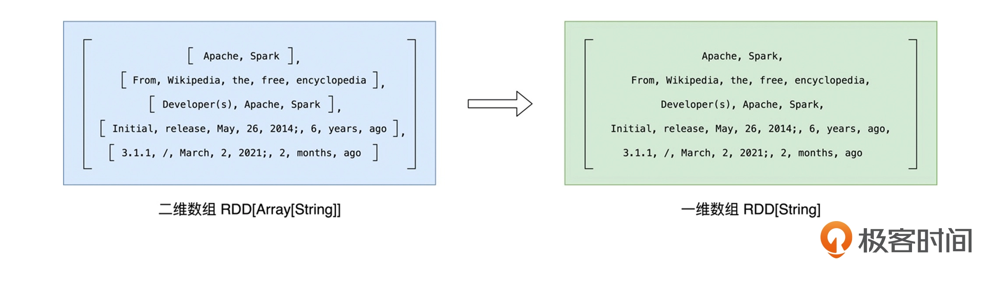
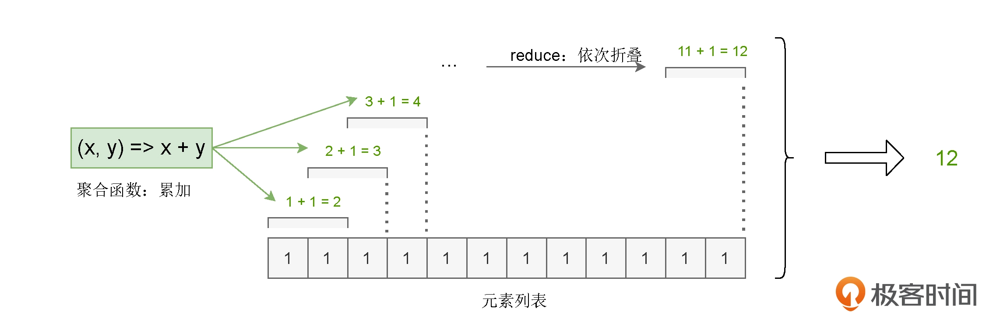

Word Count¶
Note
Word Count 即读取一个文本文件，对文件中的单词做统计计数，然后打印出频次最高的几个单词。
Word Count 是大数据的 Hello World。
读取内容¶
from pyspark import SparkContext
lineRDD = SparkContext().textFile("../data/wikiOfSpark.txt")
SparkContext 是使用 spark 的开发入口之一，需要注意的是，Cannot run multiple SparkContexts at once。
textFile 方法用于读取文本文件。
lineRDD 的类型是 RDD[String]，可以暂时把它当成元素类型是 String 的数组，数组的每个元素都是文件中的一行字符串。
分词¶
分词就是把“数组”的行元素打散为单词，要实现这一点，可以使用 RDD 的 flatMap 方法，先 map 再 flat，flat的示意图如下：  在分词之后，我们还希望过滤掉空字符串，可以使用 RDD 的 filter 方法实现。
# 分词
wordRDD = lineRDD.flatMap(lambda line: line.split(" "))
# 过滤
cleanWordRDD = wordRDD.filter(lambda word: word != "")
分组计数¶
在 RDD 的开发框架下，聚合类操作，如计数、求和、求均值，需要依赖键值对（Key Value Pair）类型的数据元素。
kvRDD = cleanWordRDD.map(lambda word: (word, 1))
使用聚合算子 reduceByKey 来完成分组计数： 
# reduceByKey: 分组计数
wordCounts = kvRDD.reduceByKey(lambda x, y: x + y)
# sortBy: 排序
# take: 获取数个元素
print(wordCounts.sortBy(lambda x: x[1], False).take(5))
[('the', 67), ('Spark', 63), ('a', 54), ('and', 51), ('of', 50)]